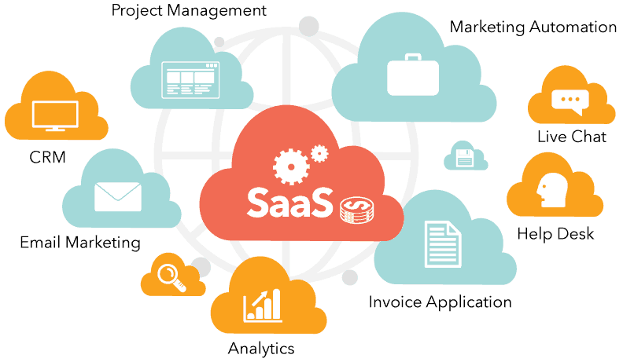
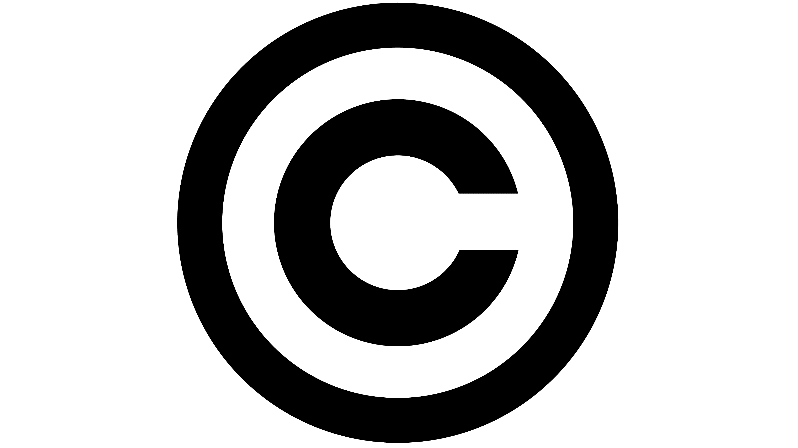

Site criado para documentar os conhecimentos desenvolvidos durante a impressoinante aventura em Arquitetura de Hardware e Software
Nesta parte você vai encontrar informações sobre hardware
Nesta parte você vai encontrar muitas informações deliciosas sobre software

Fundamentalmente, um sistema operacional é um software, que pode ser o Linux, Windows, Android, macOS, UNIX, entre outros. No entanto, ele não resume aquilo que seus olhos conseguem ver ou ao que você consegue interagir. Em outras palavras, é um programa que conversa diretamente com o hardware da sua máquina. O sistema operacional assegura que os programas funcionem corretamente. Mas antes de entendermos o que é um sistema operacional, precisamos definir o que é um sistema computacional
Fonte8. Dá para aprender a mexer no Windows 95 com Chandler e Rachel
Fonteé um programa de software que diz ao sistema operacional do seu computador como se comunicar com um dispositivo específico de hardware.
Fonteé um programa de software que diz ao sistema operacional do seu computador como se comunicar com um dispositivo específico de hardware.
FonteOs drivers são de extrema importância, pois garantem que os dispositivos de hardware funcionem corretamente e sejam reconhecidos pelo sistema operacional
Fonteé um conjunto de instruções ou declarações a serem usadas direta ou indiretamente por um computador, a fim de obter um determinado resultado.
Fonte5 curiosidades sobre: 1. Os primeiros “pré-computadores” eram movidos a vapor. 2. O primeiro algoritmo computacional foi escrito por uma mulher, Ada Lovelace. 3. O primeiro bug de computador foi causado por um inseto de verdade. 4. O primeiro video-game nunca foi vendido. 5. Uma foto da revista “Playboy” é a mais usada em testes de processamento de imagens.
FonteO q é?
Pra que serve?
Curiosidades
O software livre é um tipo de software desenvolvido e mantido de maneira colaborativa, onde o código-fonte está disponível para todos que quiserem usar, investigar, alterar e redistribuir. O open source beneficia diferentes iniciativas, pois não está focado em obter lucros relacionados à propriedade intelectual.
O software livre é um movimento que visa promover o compartilhamento de conhecimento e criar uma cultura de colaboração na comunidade de desenvolvedores. O software livre pode ser usado para qualquer propósito, desde desenvolvimento de software até pesquisa científica.
1. Modelo Colaborativo
2. Movimento do Software Livre
3. Uso em Grandes Empresas
4. Licenças Variadas
5. Educação e Acessibilidade
O software proprietário pertence a um indivíduo ou empresa e não está disponível para modificação ou distribuição pública. Os usuários normalmente devem adquirir licenças para usar software proprietário, o que geralmente inclui restrições sobre como o software pode ser usado.
É um software para computadores que é licenciado com direitos exclusivos para o produtor. Conforme o local de distribuição do software, este pode ser abrangido por patentes, direitos de autor, assim como limitações para a sua exportação e uso em países terceiros.
1. Custo de Licenciamento
2. Código Fechado
3. Suporte e Atualizações
4. Dependência de Fornecedor
5. Inovação e Investimento

O licenciamento de software é uma autorização que o desenvolvedor de um determinado software concede para que empresas utilizem a plataforma e todas suas funcionalidades com segurança. No momento em que a empresa contrata um serviço digital com o devido licenciamento, ganha o direito legal de usar o software.
Nele, podem existir restrições para downloads, instalações, manutenções, alterações (mudanças no código-fonte), uso de certas funcionalidades e distribuição. O objetivo da licença é proteger o proprietário com direitos autorais (copyright). Mas também garantir ao usuário que todas as funcionalidades e serviços estejam sempre disponíveis e de acordo com o que foi contratado.
Quais são os principais tipos de licença para softwares?
1. Licença para aquisição perpétua
2. Licença para uso temporário
3. Licença para software livre
4. Licença Open Source
5. Licença para aluguel
6. Licença para SaaS
Copyright é uma maneira de proteger materiais autorais, dando direito de propriedade a quem utiliza o intelecto para produzir algo único. Dessa forma, possibilita que os autores usem e distribuam o que criam, da maneira que julgarem melhor.
O Copyright proíbe a reprodução da obra original por qualquer meio, no caso de não haver autorização prévia para tal. Dessa forma, toda obra original, incluindo músicas, vídeos, imagens, etc., dão ao autor ou proprietário, direitos exclusivos.
1. Obras em Domínio Público: Quando o copyright expira, as obras entram em domínio público, o que significa que podem ser utilizadas livremente por qualquer pessoa. O domínio público varia conforme a legislação de cada país.
2. No Beasil, os direitos autorais (ou direitos de autor) duram por setenta anos contados de 1° de janeiro do ano subsequente ao falecimento do autor. Além das obras em que o prazo de proteção aos direitos excedeu, pertencem ao domínio público também: as de autores falecidos que não tenham deixado sucessores; as de autor desconhecido, ressalvada a proteção legal para os conhecimentos étnicos e tradicionais.
3. Copyright Global: O copyright é regulado internacionalmente pela Convenção de Berna, que garante que as obras de um autor sejam protegidas em todos os países que assinaram a convenção.
4. Multas e Sanções: As violações de copyright podem resultar em multas substanciais. Em casos de violação intencional, as sanções podem chegar a 150 mil dólares por obra infringida.
O copyleft é uma forma de inversão da lei de direitos autorais, conhecida pelo termo inglês copyright. Em vez de o usuário pagar uma quantia referente ao valor do produto ao revendedor ou criador, o copyleft assegura o acesso de qualquer pessoa à informação, contanto que a fonte original sempre seja citada. Além disso, este conceito faz com que qualquer obra que leve o seu sinal possa ser reproduzida em larga escala e sem nenhum custo.
Enquanto o copyright é visto pelos mentores originais do copyleft como uma maneira de restringir o direito de fazer e distribuir cópias de determinado trabalho, uma licença de copyleft usa a lei do copyright de forma a garantir que todos que recebam uma versão da obra possam usar, modificar e também distribuir tanto a obra quanto suas versões derivadas
1. Licenças Populares: A Licença Pública Geral GNU (GPL) é uma das licenças copyleft mais conhecidas. Ela garante que qualquer software derivado também seja livre e compartilhe o mesmo tipo de liberdade.
2. Aplicação em Outras Áreas: O conceito de copyleft não se limita ao software. Ele pode ser aplicado a qualquer tipo de criação, incluindo obras artísticas e literárias, permitindo que essas obras sejam livremente usadas e adaptadas.
3.Impacto na Inovação: O copyleft é considerado um motor de inovação, pois permite que os desenvolvedores construam sobre o trabalho uns dos outros, resultando em um ciclo contínuo de melhoria e evolução de software.
Creative Commons é um tipo de licença de atribuição em que os autores podem especificar que seu trabalho seja usado de uma determinada maneira. Em geral, conteúdo do tipo CC não exige que você solicite permissão antecipada ou pague qualquer tipo de taxa de licenciamento ao autor.
O objetivo principal do projeto é dar aos autores, sejam empresas ou pessoas físicas, ferramentas simples que possibilitam a troca de “todos os direitos reservados” (copyright) para “alguns direitos reservados” (copyleft).

1. Licenças Diversificadas: O Creative Commons oferece seis tipos de licenças, cada uma com diferentes permissões. As licenças permitem que os criadores escolham como desejam que suas obras sejam utilizadas, incluindo opções como atribuição, uso não comercial e proibição de obras derivadas.
2.Impacto na Educação: O Creative Commons tem desempenhado um papel significativo na educação, permitindo que materiais didáticos sejam compartilhados livremente, promovendo o acesso ao conhecimento e incentivando a criação de recursos educacionais abertos (OERs).
3. Uso na Música e na Arte: Muitos músicos e artistas utilizam licenças Creative Commons para permitir o compartilhamento e a remixagem de suas obras, promovendo uma nova cultura de colaboração na indústria criativa.
4.Colaboração com Plataformas: Várias plataformas online, como Wikipedia, Flickr e SoundCloud, utilizam licenças Creative Commons, permitindo que usuários compartilhem e colaborem de maneira mais aberta e flexível.
Sw livre;
ibm Sebrae imagemSw proprioetário;
phoenixnap wikipédia imagemTipos de Licenças de Sw;
navita blog.eveo imagemCopyR.
rockcontent editoraominssicientia- imagem acvtoris CC WIPO CrIPCopyL.
infoescola repositorio imagem GNU CC fonteCreative Commos
rockcontent fila.com blog. imagem CC unesco.otg CCMusic CCWikipédia